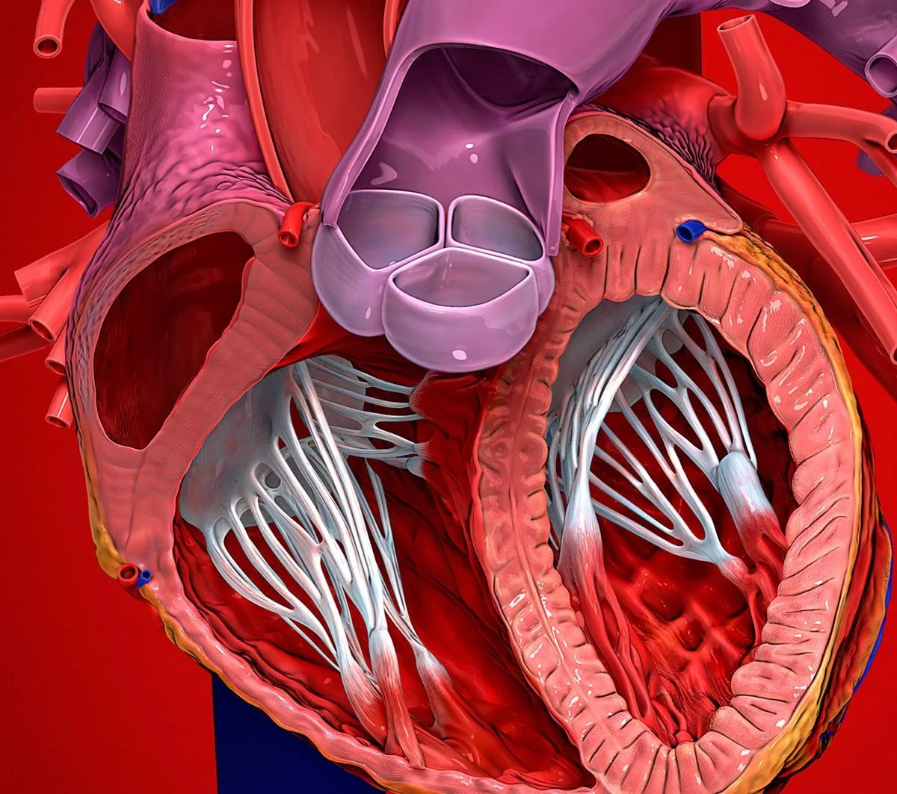

ORGAN → UNDER THE LENS
Cardiac muscle tissue
Tap to compare the organ region with a tissue-level teaching illustration.
Read about Myocardium ↓A four-chambered muscular pump with four valves and its own electrical conduction system.

Superior vena cavaSinoatrial nodeInteratrial septumTricuspid valveRight atriumAtrioventricular nodeRight ventricleChordae tendineaeInferior vena cavaPapillary musclesAortaPulmonary trunkLeft atriumPulmonary veinsCoronary arteriesMitral valvePulmonary valveAortic valveInterventricular septumLeft ventricleMyocardiumThe heart is a double pump. Its right side receives deoxygenated blood from the venae cavae and sends it to the lungs; its left side receives oxygenated blood from the pulmonary veins and ejects it into the aorta. The two sides never mix because of the interatrial and interventricular septa, and one-way valves keep blood moving forwards. Contraction is triggered by an electrical impulse that begins in the sinoatrial node and sweeps through the atria, the atrioventricular node, the bundle of His and the Purkinje fibres.
These are educational cutaways, not literal magnifications of an organ pixel or laboratory slides. A ring marks the approximate tissue region; part-specific lines appear only where identifiable.
Tap to compare the organ region with a tissue-level teaching illustration.
Read about Myocardium ↓Tap to compare the organ region with a tissue-level teaching illustration.
Read about Bundle of His & bundle branches ↓These 22 structures describe anatomy related to the chapter’s regional illustration. Each entry separates location, function and a clinical point.
The large vein draining the head, neck, upper limbs and thorax. It enters the upper part of the right atrium.
What it doesReturns deoxygenated blood from everything above the diaphragm.
Clinical connectionObstruction (SVC syndrome) causes facial and arm swelling with distended neck veins.
The largest vein in the body. It collects blood from the abdomen, pelvis and lower limbs and enters the inferior part of the right atrium.
What it doesReturns deoxygenated blood from below the diaphragm.
Clinical connectionCompression in late pregnancy reduces venous return and can cause supine hypotension.
The largest artery in the body. It arises from the left ventricle, arches over the left main bronchus and descends through the thorax and abdomen.
What it doesDistributes oxygenated blood to the entire systemic circulation.
Clinical connectionA tear in the wall (aortic dissection) causes sudden tearing chest or back pain — a surgical emergency.
Leaves the right ventricle and divides into right and left pulmonary arteries. Uniquely, it carries deoxygenated blood.
What it doesCarries blood from the right ventricle to the lungs for oxygenation.
Clinical connectionA clot lodging here (pulmonary embolism) causes breathlessness, pleuritic pain and hypoxia.
Four veins — two from each lung — that carry freshly oxygenated blood into the left atrium.
What it doesReturn oxygenated blood from the lungs to the heart.
Clinical connectionEctopic electrical foci in the pulmonary vein ostia are the commonest trigger of atrial fibrillation.
The thick middle layer of the heart wall, made of branching, interlinked cardiac muscle fibres joined by intercalated discs.
What it doesContracts to generate the pressure that ejects blood.
Clinical connectionDeath of myocardium from a blocked coronary artery is a myocardial infarction; the dead tissue scars rather than regrows.
Thin-walled receiving chamber for the superior and inferior venae cavae and the coronary sinus. Contains the fossa ovalis and the right auricle.
What it doesCollects deoxygenated blood and passes it to the right ventricle through the tricuspid valve.
Clinical connectionHouses the SA node, so it initiates every normal heartbeat.
The most posterior chamber, receiving the four pulmonary veins.
What it doesPasses oxygenated blood to the left ventricle through the mitral valve.
Clinical connectionEnlargement can press on the oesophagus (dysphagia) or the recurrent laryngeal nerve (hoarseness).
Crescent-shaped chamber with a thinner wall than the left, lined by trabeculae carneae and containing the moderator band.
What it doesPumps deoxygenated blood through the pulmonary valve into the pulmonary trunk.
Clinical connectionFails first in pulmonary hypertension (cor pulmonale), causing raised jugular venous pressure and ankle oedema.
The thickest-walled chamber — roughly three times the right ventricle — because it must drive blood around the whole body.
What it doesEjects oxygenated blood through the aortic valve into the aorta.
Clinical connectionPressure overload (hypertension, aortic stenosis) causes concentric hypertrophy and later heart failure.
The thin wall between the two atria. Its shallow depression, the fossa ovalis, marks where the foramen ovale closed after birth.
What it doesKeeps the atrial circulations separate.
Clinical connectionA patent foramen ovale persists in ~25% of adults and can allow a paradoxical embolus to cause a stroke.
Thick muscular wall between the ventricles, with a thin membranous part just below the aortic valve.
What it doesPrevents mixing of oxygenated and deoxygenated blood and carries the bundle branches.
Clinical connectionThe membranous part is the commonest site of a ventricular septal defect, the most frequent congenital heart lesion.
Three cusps (anterior, posterior, septal) between right atrium and right ventricle.
What it doesCloses at ventricular systole to stop backflow into the right atrium.
Clinical connectionRegurgitation produces large "v" waves in the jugular venous pulse and a pulsatile liver.
The bicuspid valve between left atrium and left ventricle, with anterior and posterior cusps.
What it doesCloses at ventricular systole to stop backflow into the left atrium.
Clinical connectionRheumatic fever most often narrows it (mitral stenosis), giving a mid-diastolic murmur and atrial fibrillation.
Three semilunar cusps (right, left and non-coronary) at the root of the aorta. The right and left sinuses above the cusps give off the coronary arteries.
What it doesOpens in systole, closes in diastole to prevent reflux into the left ventricle.
Clinical connectionCalcific aortic stenosis in the elderly causes angina, syncope and breathlessness.
Three semilunar cusps at the junction of the right ventricle and pulmonary trunk.
What it doesPrevents backflow from the pulmonary trunk into the right ventricle during diastole.
Clinical connectionAbsent or stenotic in tetralogy of Fallot, contributing to right-to-left shunting.
Fibrous "heart strings" running from the edges of the AV valve cusps to the papillary muscles.
What it doesTauten during systole so the cusps cannot prolapse into the atria.
Clinical connectionRupture (e.g. after infarction or in endocarditis) causes sudden severe valve regurgitation.
Conical muscles projecting from the ventricular walls; two in the left ventricle, three in the right.
What it doesContract with the ventricle to anchor the chordae tendineae.
Clinical connectionThe posteromedial papillary muscle has a single blood supply and is the one most likely to rupture after infarction.
Right and left coronary arteries arising from the aortic sinuses. The left divides into the anterior interventricular (LAD) and circumflex branches.
What it doesSupply the myocardium itself — the heart fills during diastole but perfuses itself only then.
Clinical connectionAtherosclerotic narrowing here causes angina; acute occlusion causes myocardial infarction. The LAD is the "widow-maker".
A crescent of specialised pacemaker cells in the right atrial wall at the entrance of the SVC. Fires at ~60–100/min without any nervous input.
What it doesSets the heart rate — the natural pacemaker.
Clinical connectionSick sinus syndrome causes bradycardia and pauses, often needing a permanent pacemaker.
Pacemaker tissue in the inferior interatrial septum, near the coronary sinus and the septal cusp of the tricuspid valve.
What it doesDelays the impulse ~0.1 s so the atria finish emptying before the ventricles contract.
Clinical connectionThe only normal electrical connection between atria and ventricles; block here causes heart block.
The bundle of His crosses the fibrous skeleton, then splits into right and left bundle branches that run down the interventricular septum to the Purkinje fibres.
What it doesConducts the impulse rapidly to both ventricles so they contract almost simultaneously, from apex upwards.
Clinical connectionBranch blocks widen the QRS complex on the ECG; the left bundle branch block masks infarction patterns.
Short answers grounded in the structures described above. Use the illustrated guide for anatomical context.
The heart has two upper receiving chambers, the right and left atria, and two lower pumping chambers, the right and left ventricles. The right ventricle sends blood to the lungs; the left sends it to the body.
Blood returns from the body to the right atrium, passes the tricuspid valve to the right ventricle, then crosses the pulmonary valve to the lungs. Oxygenated blood returns to the left atrium, passes the mitral valve to the left ventricle and leaves through the aortic valve.
The left ventricle must generate greater pressure to move blood through the systemic circulation. Its myocardium is therefore thicker than that of the right ventricle, which pumps into the lower-pressure pulmonary circulation.
No. Coronary arteries branch near the aortic root and supply the heart muscle itself. The blood passing through the chambers does not directly nourish the full thickness of the myocardium.
Tricuspid and mitral valves guard the atrioventricular openings; pulmonary and aortic valves guard ventricular outflow. They open and close in response to pressure changes, limiting backward flow rather than actively pumping blood.
General anatomy references and related source chapters for continued study. These links do not make the digital illustrations clinical images or certify every anatomical variant.
This educational page is not medical advice and has not undergone formal clinical peer review. Spotted an error? Contact the editor.
Open the realistic interactive plate, label lines, focus view and self-test.